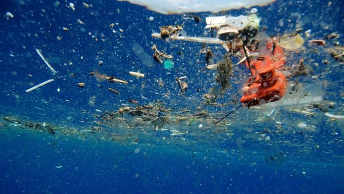

According to Ecocycle, The United States uses over 500 million straws everyday and average we use 38,000 straws between the ages of 5 and 65. This has major impact on our oceans. The straws are made from a type 5 plastic named polypropylene and it can be recycled,but it is not accepted by most recycling programs. The reason they are not accepted is that the straws are small, thin, and bend too easily. This makes it difficult for recycling programs because it can fall into the machinery. This leads to straws going into landfills and oceans. Straws degrade which means they break down into smaller pieces, but don't actually disappear. The plastic that breakdown in the ocean become a smog, when plastics photodegrade and breaks into small pieces. The plastic are microplastics and it size of less than 5 millimeters in length.

The microplastics in the ocean is then are swallowed by the fish and birds near the ocean. The marine will ingest the plastic and affect their eating habits. The plastic will block their digestive tracts and diminish the urge to eat. This would lead to them dying of starvation. The plastics can broken down into nanoplastic and thus able to penetrate cells. The plastic is essentially invisible and we can’t tell if it is in the food we eat. One solution that we could do help marine life is to stop the use of single use plastic straws. This would help reduce the amount of straws being dumped away and ending up in landfills and oceans. Big companies, like Starbucks, who use straws for their drinks, are implementing recyclable strawless lids and eliminating the use of single use plastic straws by 2020 worldwide. On a larger scale, the government can put a ban on certain type of plastics that are most problematic and invest money in capturing the plastic and then recycling it. In conclusion, single use plastic straws, which have a negative impact on animals, therefore, we should stop using it and begin using alternative methods.